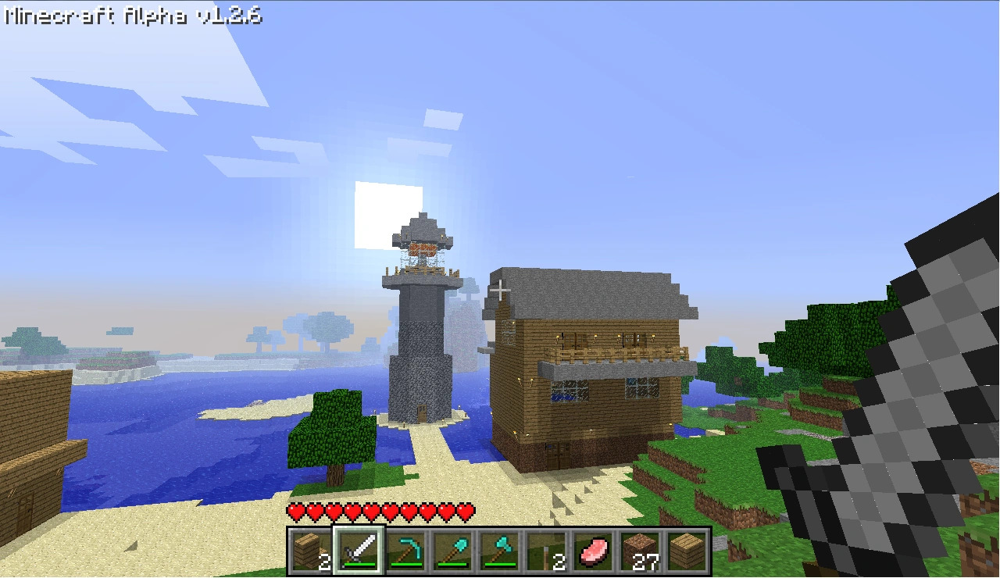
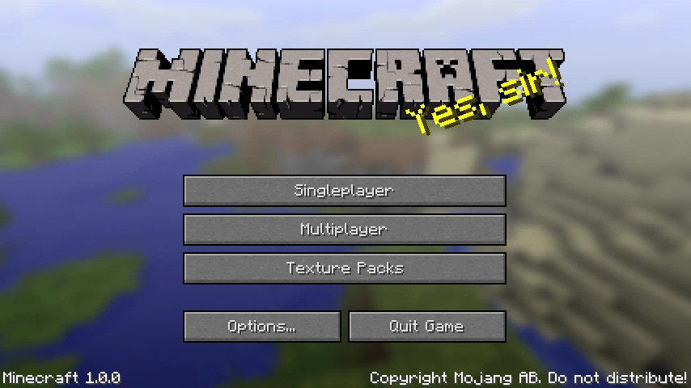
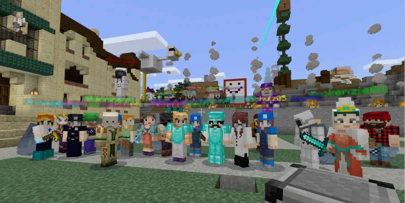

Early Days: Minecraft Alpha and Beta
Minecraft was first released as an alpha version in 2009 by Markus Persson. The game gained popularity during its beta phase, introducing survival mode, multiplayer support, and key features that defined the sandbox genre. Fun Fact: In it's beta phase, Minecraft sold over one million copies!
Official Release: Minecraft 1.0
In November 2011, Minecraft officially launched as version 1.0. This marked the transition from beta to full release, introducing The End dimension, Ender Dragon boss, and various game updates that expanded gameplay possibilities. The game sold between 4-9 million copies!
Post-Release Updates and Community Growth
Following the official launch, Minecraft continued to receive regular updates, adding new features, biomes, mobs, and game mechanics. The game's community grew rapidly, contributing to the development of mods, maps, and custom content. Community members are also responsible for developing Multiplayer Servers worldwide. Players from around the world can play together in a server, such as an SMP (Survival Multi-Player) or RPG style gameplay.
